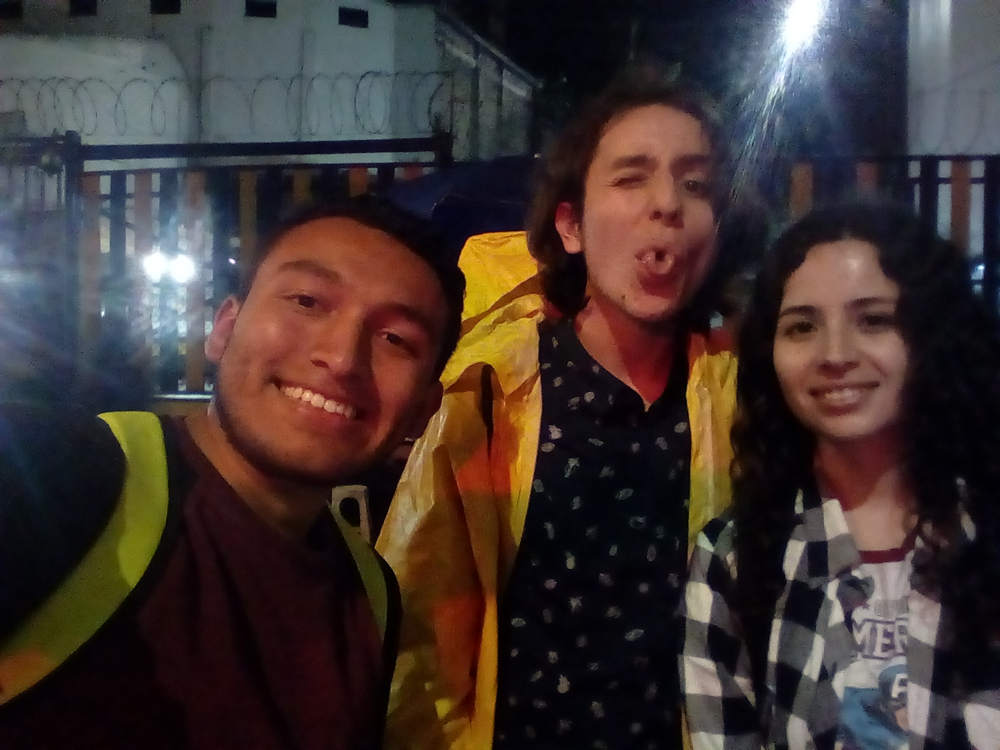
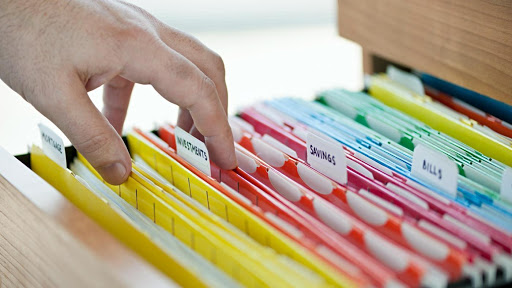

Somos un conjunto interdisciplinario de profesionales con formación cientifica. Nuestra experiencia en el campo academico (universidades y centros de investigación), en el campo laboral (en el ambito administrativo, de analisis y de calidad) y en el campo industrial nos hizo percatarnos de una necesidad no saciada en la mayoria de organizaciónes que de una u otra forma generan, recolectan y/o publican datos: el análisis efectivo y exhaustivo de los mismos.
Nuestra misión es expandir las capacidades analiticas de las organizaciones y personas que lo necesiten. Deseamos ayudar a encontrar sentido a conjuntos complejos de datos, asesorar en la planeación efectiva y optima de los diseños experimentales necesarios para lograr objetivos particulares, colaborar en el proceso de adquision de los datos para garantizar su confiabilidad y promover maneras efectivas de publicación de los mismos, ya sea para informes, storytelling, presentaciones, etc. pues consideramos al analisis y comprensión de los datos como un arte, y deseamos promover de esta manera la Belleza de la Analitica
En BOAchem deseamos establecer una relación cercana, de comunicación efectiva y de colaboración entre nuestro equipo y nuestros clientes. Por eso te invitamos a conocer a nuestro equipo:
CEO & Founder
Químico de la Universidad Nacional de Colombia. Experiencia en R&D, analista lider del area de cromatografía en ASINAL S.A.S. por dos años. Entusiasta de la programación y en la aplicación de herramientas estadisticas en la química.
jcmonroyg@unal.edu.co
CEO & Founder
Química de la Universidad Nacional de Colombia. Investigadora en el instituto tecnico de Toulouse, Francia.
example@example.com

CEO & Founder
Químico, Universidad Nacional de Colombia, lider laboratorio de química de alimentos ASINAL S.A.S., analista de calidad en producto terminado y materias primas en pinturas Every S.A.S. Apasionado por retos de investigación y desarrollo.
mslopezm@unal.edu.co
Tel: (+57) 310 4260123
Planeamos el diseño experimental optimo, es decir la planificacion de la adquision de datos, segun los objetivos que quieran ser logrados por el cliente, tenemos tambien la capacidad para generar los datos si estos estan relacionados con analisis químico-analiticos y por supuesto tenemos la experiencia para realizar una recoleccion organizada y optima de los mismos para su posterior revision, analisis y depuracion. Adicionalmente nos dedicamos al procesamiento de los datos usando herramientas de la estadistica descriptiva y multivariable, que permiten dar valor agregado a conjuntos complejos y heterogeneos de datos, que suelen ser analizados de manera superficial. Nuestra misión es explorar el potencial que los datos recolectados por las organizaciones o personas interezadas tienen. Por ultimo ofrecemos el servicio de presentación de los mismos para fines academicos, divulgativos, presentaciones comerciales, etc.
Los datos son más que una forma de representar el mundo que nos rodea, en BOAchem los vemos como la herramienta que permite establecer realidades y tomar desciciones, por ello comprendemos lo valiosos que son y la importancia que tienen para la exitosa ejecucion de cualquier fin. Nuestros servicios son esenciales en cualquier parte del proceso desde la planeacion del estudio hasta la presentacion de los resultados.
BOAchem ha definido 5 momentos esenciales en el proceso de cualquier organización en el que nuestros servicios estan enmarcados: planeacion, generación, recolección, analisis y
CEO & Founder
el cliente tiene claro el objetivo que quiere alcanzar, BOAchem entonces se encarga de establecer el diseño experimental que le permitira lograr su objetivo. Este servicio es en especial valioso para laboratorios de análisis que desean realizar la validacion o confirmacion de sus metodos analiticos para acreditarse. Nuestro equipo de trabajo tiene experiencia en acreditaciones frente a la ONAC y el IDEAM, y estamos en la capacidad de asesorar al cliente para la acreditacion frente a cualquier organismo, sea nacional o internacional, pues en BOAchem usamos todas las herramientas estadisticas que permiten demostrar de manera objetiva cualquier parametro experimental que requiera ser demostrado (confiabilidad, robustez, precision, exactitud, linealidad, selectividad, especificidad, etc.). Esta es justamente la Belleza de la Analitica.
¡Contáctanos y descubre!o
Confiables y rápidos.
Descripcción aún no disponible.
¡Contáctanos y descubre!

Accesibilidad para gestión y análisis
Descripcción aún no disponible.
¡Contáctanos y descubre!
Estadística aplicada
Descripcción aún no disponible.
¡Contáctanos y descubre!
Storytelling
Descripcción aún no disponible.
¡Contáctanos y descubre!
BOAchem: Beauty Of Analytics & Chemistry | Juntos hacemos ciencia.
Bogotá D.C., Colombia
¡Contáctanos!
E-mail: jcmonroyg@unal.edu.co
WhatsApp/Teléfono: (+57) 316 6626 025